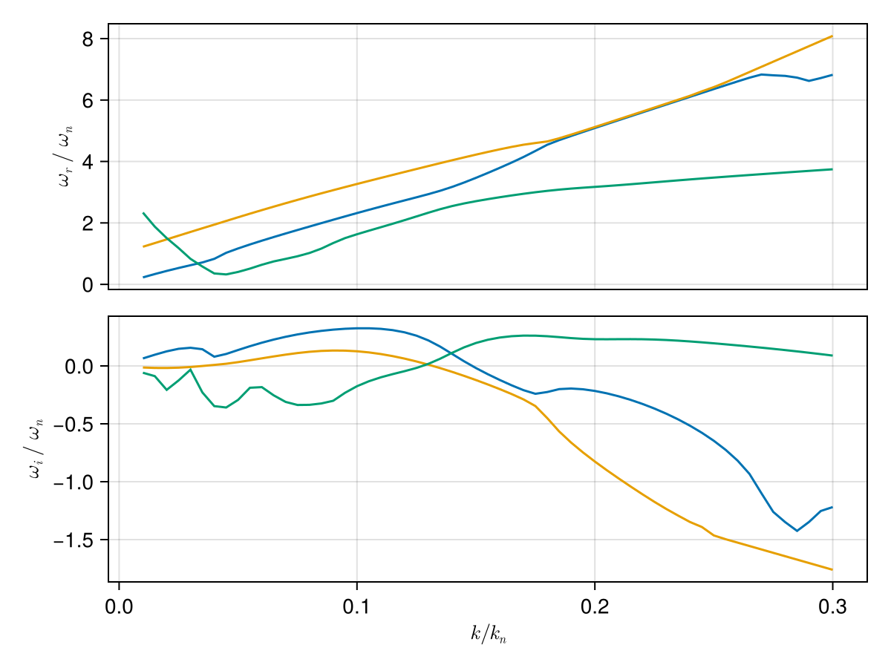

Case: Ring beam instability
This page demonstrates how to use the package to solve kinetic dispersion relations for the ring beam instability Umeda et al. [5].
Simulation Parameters
- Background Magnetic Field: $B_0 = 96.24$ nT
- Species:
- Ring Beam Electrons ($10\%$)
- Density: $n_r = 0.1 n_0$
- Temperature: $T_r = 51$ eV
- Drift Velocity: $v_{d,z} = 0.1 c$, $v_{d,\perp} = 0.05 c$
- Background Electrons ($90\%$)
- Density: $n_b = 0.9 n_0$
- Temperature: $T_b = 51$ eV
- Drift Velocity: $v_{d} = 0$
- Ring Beam Electrons ($10\%$)
using PlasmaBO
using PlasmaPopulations: gyrofrequency, thermal_speed, debye_length
using Unitful
# Umeda 2012 ring beam configuration
B0 = 96.24e-9 # [Tesla]
e = Electron()
T = 51u"eV"
vth = thermal_speed(e, T)
plasma = Plasma(
# Ring beam electrons (10% density): parallel drift `vd`, ring speed `vr`
Population(e, GaussianRing(; vr_perp = 0.05u"c", w_perp = vth, vth_para = vth, vd_para = 0.1u"c"); n = 1e5),
# Background electrons (90% density)
Population(e, BiMaxwellian(; vth); n = 9e5);
B0,
)
# Compute normalization
wce = abs(gyrofrequency(e, B0))
lambdaD = debye_length(e, 1e6, T) # of the total electron density
kn = 1 / lambdaD
# Wave vector: k*λD = 0.03, θ = 40°
k = 0.03 / lambdaD
θ = deg2rad(40)
kx = k * sin(θ)
kz = k * cos(θ)
# J=12 provides good accuracy (J-pole approximation order)
ωs = solve(plasma, Wavevector(kx, kz), BOHH(; N=6, J=12))
# Filter for unstable modes (ω/ωce) with positive growth rate
ω_unstable = filter(ω -> isfinite(ω) && imag(ω) > 0.001*wce, ωs)[1] ./wce0.6229290801797231 + 0.15687749192693595imDispersion Curve Scan
Scan k*λD from 0.01 to 0.3
julia> k_ranges = (0.01:0.005:0.3) .* kn;julia> sol = solve(plasma, AngleSweep(; k = k_ranges, theta = θ), BOHH(; N=6))Solving dispersion (k, θ)... 8%|█▉ | ETA: 0:00:18 Solving dispersion (k, θ)... 25%|█████▋ | ETA: 0:00:10 Solving dispersion (k, θ)... 36%|███████▉ | ETA: 0:00:08 Solving dispersion (k, θ)... 46%|██████████▏ | ETA: 0:00:07 Solving dispersion (k, θ)... 56%|████████████▎ | ETA: 0:00:06 Solving dispersion (k, θ)... 66%|██████████████▌ | ETA: 0:00:04 Solving dispersion (k, θ)... 78%|█████████████████▏ | ETA: 0:00:03 Solving dispersion (k, θ)... 86%|███████████████████ | ETA: 0:00:02 Solving dispersion (k, θ)... 98%|█████████████████████▋| ETA: 0:00:00 Solving dispersion (k, θ)... 100%|██████████████████████| Time: 0:00:12 PlasmaBO.DispersionSolution{StepRangeLen{Float64, Base.TwicePrecision{Float64}, Base.TwicePrecision{Float64}, Int64}, Float64, Matrix{Vector{ComplexF64}}}(0.00018836306296528098:9.418153148264049e-5:0.005650891888958429, 0.6981317007977318, Vector{ComplexF64}[[-102928.90548195467 - 993.7228683011133im, -102928.90548195434 - 993.7228683011969im, -102928.90548195413 - 993.7228683011379im, -102456.80666125867 - 1093.758378016171im, -102456.80666125825 - 1093.7583780161265im, -102456.80666125799 - 1093.7583780161367im, -102074.22773825045 - 1156.3266321004778im, -102074.22773825025 - 1156.3266321004862im, -102074.22773824993 - 1156.3266321004612im, -101728.7237094934 - 1186.7577950154123im … 106054.56332324853 - 1186.7577950154705im, 106400.06735200377 - 1156.3266321004587im, 106400.06735200409 - 1156.3266321004216im, 106400.0673520045 - 1156.3266321004955im, 106782.64627501149 - 1093.7583780161447im, 106782.64627501213 - 1093.7583780161406im, 106782.64627501264 - 1093.758378016163im, 107254.74509570755 - 993.7228683011546im, 107254.7450957081 - 993.7228683011747im, 107254.74509570833 - 993.7228683012036im]; [-104132.24874106684 - 4.5174760998634156e-7im, -103612.70687191683 - 1490.5843024517005im, -103612.70687191644 - 1490.5843024517608im, -103612.70687191634 - 1490.5843024517885im, -102904.55864087408 - 1640.6375670242378im, -102904.55864087396 - 1640.637567024286im, -102904.55864087316 - 1640.6375670242414im, -102330.69025636138 - 1734.489948150706im, -102330.69025636122 - 1734.4899481506739im, -102330.69025636118 - 1734.4899481507252im … 108301.19363385886 - 1780.1366925231305im, 108819.44967698916 - 1734.4899481523648im, 108819.4496769925 - 1734.4899481507352im, 108819.449676993 - 1734.4899481507296im, 109393.31806150454 - 1640.6375670242467im, 109393.31806150496 - 1640.6375670242303im, 109393.31806150536 - 1640.6375670245798im, 110101.46629254804 - 1490.584302451738im, 110101.46629254814 - 1490.5843024517508im, 110101.46629254847 - 1490.5843024517144im]; … ; [-1.6668220836081028e6 - 9.890209184959531e-8im, -1.6668073248331316e6 - 9.545124157739338e-8im, -141905.58709021998 - 29314.82018860404im, -141905.5847098457 - 29314.824614884517im, -141905.584709833 - 29314.82461490608im, -127978.72729700251 - 32265.960700195443im, -127978.66949931512 - 32265.872151476528im, -127978.66949907958 - 32265.87215101186im, -124978.76572192974 - 29314.70139672715im, -124978.7009261739 - 29314.82461488474im … 252590.96953192237 - 29314.824614884685im, 252611.62187253803 - 29293.731599868137im, 255590.937666019 - 32265.86874894017im, 255590.93810506538 - 32265.87215147664im, 255608.1763061439 - 32353.934329440974im, 269517.8531868177 - 29314.82473934859im, 269517.8533155938 - 29314.824614884623im, 269521.1279148572 - 29311.4532094154im, 1.6668074221195618e6 - 1.0671678856788783e-7im, 1.666822250044989e6 - 1.1304427971481346e-7im]; [-1.6950407503500832e6 - 9.731593308970332e-8im, -1.6950264903472522e6 - 9.38362063607201e-8im, -142589.38890156578 - 29811.680869062642im, -142589.3860998076 - 29811.686049035205im, -142589.3860997924 - 29811.686049061012im, -128426.48881320607 - 32812.85516048053im, -128426.42147893115 - 32812.75134048452im, -128426.42147864451 - 32812.751339920425im, -125662.57611634667 - 29811.546686511418im, -125662.50231613746 - 29811.686049035303im … 255437.69072876268 - 29811.686049035176im, 255460.25612835216 - 29788.66899841665im, 258201.60938641522 - 32812.7472969381im, 258201.60989155472 - 32812.75134048428im, 258220.9409698465 - 32912.85193968118im, 272364.5743590079 - 29811.686196537936im, 272364.5745124325 - 29811.68604903517im, 272368.3149728055 - 29807.85990027004im, 1.695026595114537e6 - 1.0410719021710854e-7im, 1.6950409221266378e6 - 1.1054362403228879e-7im];;])
# k, ω pairs for initial branch points (see `BranchPoint` for more control over tracking)
initial_points = [
(0.1 * kn, 0.3im * wce),
(0.1 * kn, 0.1im * wce),
(0.2 * kn, 0.25im * wce)
]
branches = track.(sol, initial_points)
# Extract individual branches
for (i, (k_branch, ω_branch)) in enumerate(branches)
println("Branch $i:")
println(" k range: $(minimum(k_branch)) to $(maximum(k_branch))")
println(" Max growth rate: γ = $(maximum(imag.(ω_branch)))")
endBranch 1:
k range: 0.00018836306296528098 to 0.005650891888958429
Max growth rate: γ = 5508.50336195021
Branch 2:
k range: 0.00018836306296528098 to 0.005650891888958429
Max growth rate: γ = 2253.5376229486005
Branch 3:
k range: 0.00018836306296528098 to 0.005650891888958429
Max growth rate: γ = 4434.587878253838Plot all branches
using CairoMakie
plot_branches(branches, kn, wce)